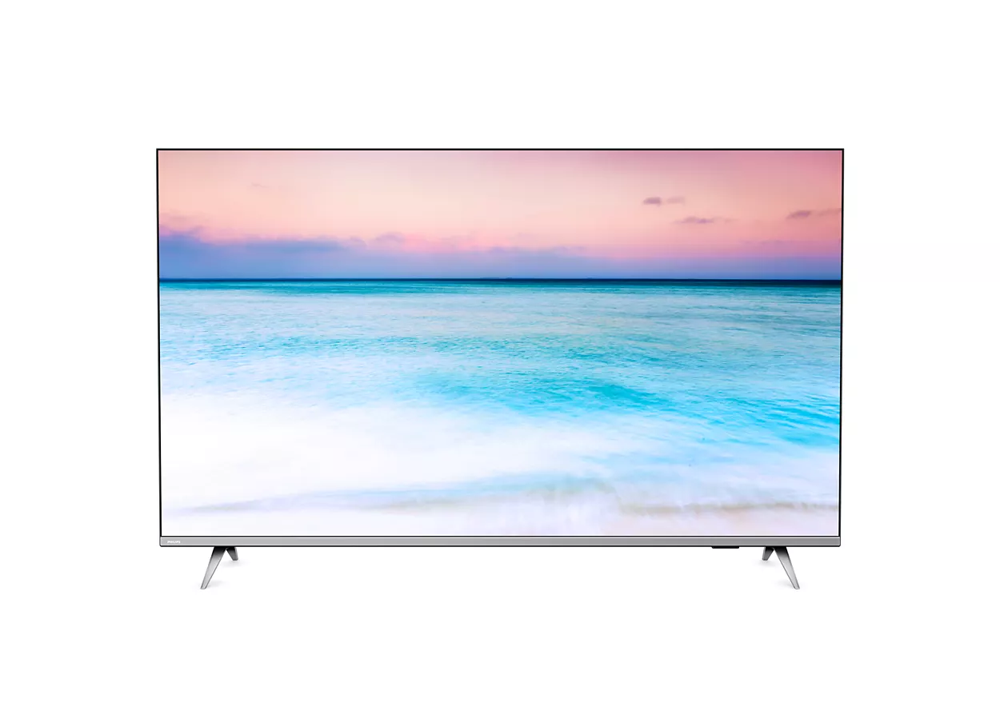
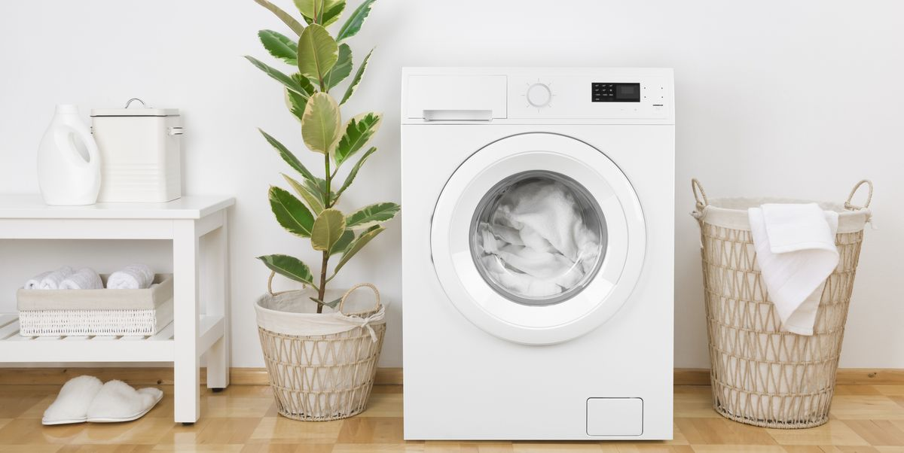

Бытовые техники

Бытовая техника очень важна для человека, это холодильник, микроволновая печь, морозильная камера, газовая плита и т. д.
Телевизор является электронным устройством, которое нужно для того, чтобы принимать и отобрать изображение со звуком с помощью беспроводных каналов. Отличается от других устройств встроенным тюнером для приема высоких частот сигнала.
Стиральная машина автомат, облегчает труд женщин и мужчин. Стиральная машина — установка для стирки текстильных изделий (одежды, нижнего и постельного белья, сумок и других вещей), а также иногда обуви